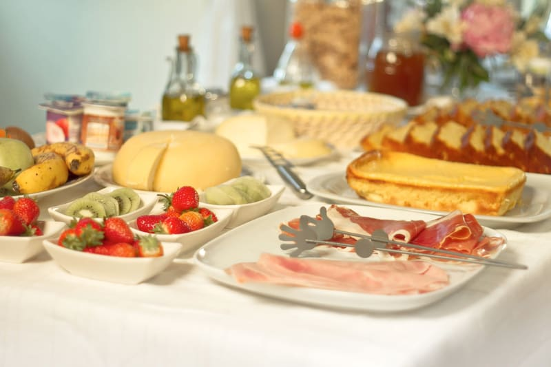
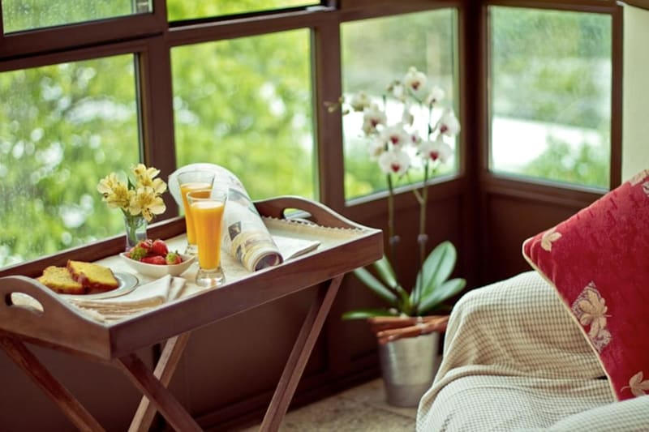
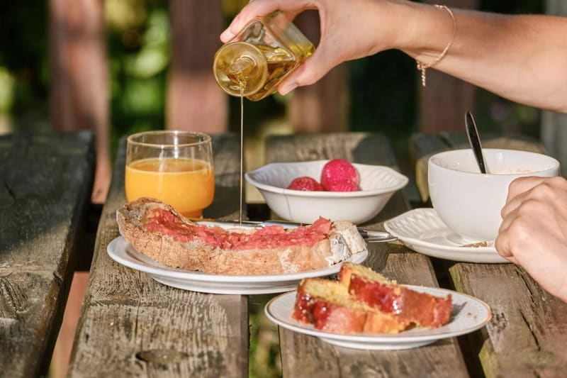

El desayuno
Dulce o salado, tu momento preferido

Dulce o salado seguro que el desayuno es tu momento preferido.
- Tostadas de pan de pueblo con aceite de oliva virgen y tomate recién rallado.
- Esponjosos bizcochos de zanahoria, de yogur.
- Galletitas caseras de chocolate, de avena y arándanos.
- Queso gallego, tabla de embutidos.
- Zumo fresquito de naranjas, exprimidas en el momento.
- Tortilla francesa con huevos de nuestro corral…
Si eres intolerante a algún alimento no te preocupes, si nos avisas con tiempo podemos adaptar tu desayuno.


We speak English. On parle français.
¿Te quedas?
Llama o escribe por WhatsApp al 698 148 323. Se habla inglés y francés.
Ver disponibilidad